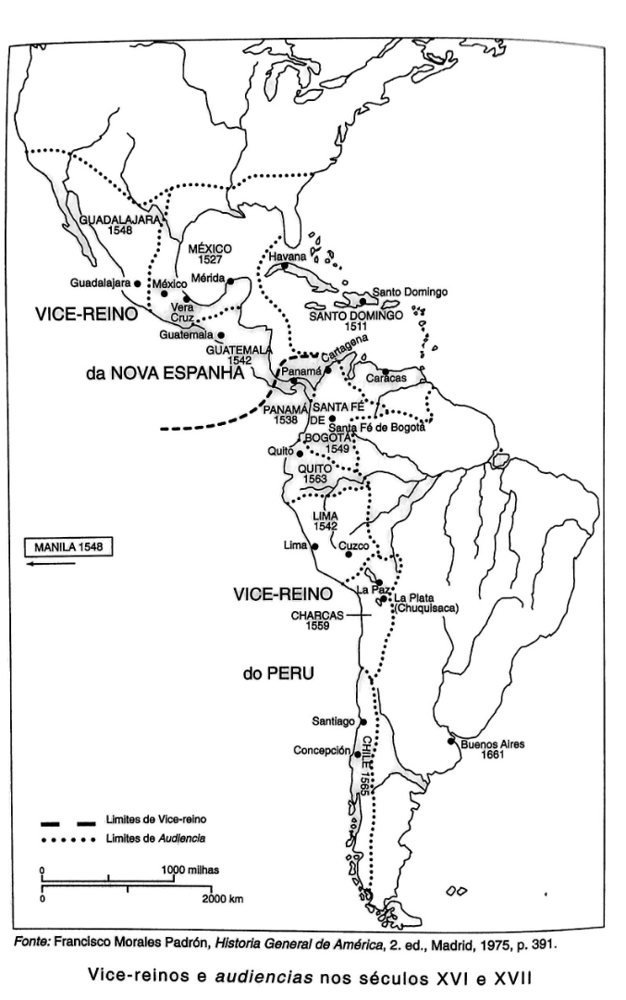
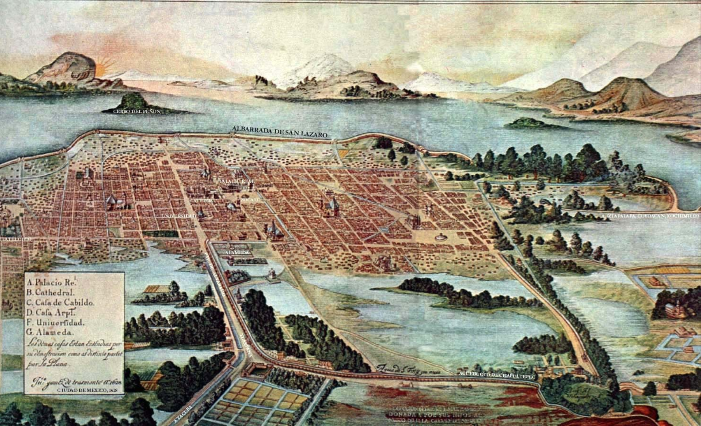
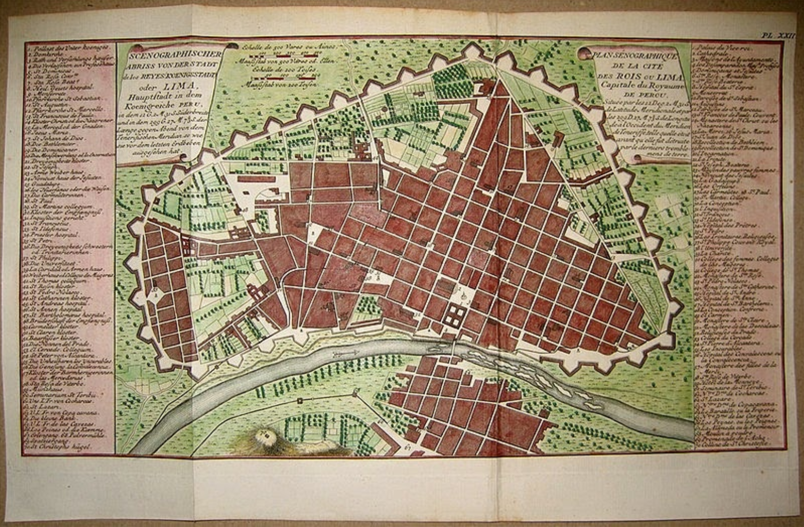

Aula 5
Aula 5CCLHM0076 · História da América
Formação da sociedade colonial espanhola (XVI–XVIII)
Aula 5Acesse os slides da Aula 5
Abra a apresentação no celular e acompanhe no seu ritmo.
 Aula 5
Aula 5Ponto de partida
Objetivos da aula
- Compreender o processo de constituição da sociedade colonial espanhola nas Américas entre os séculos XVI e XVIII.
Aula 5Organização
Percurso da aula
- Sistema administrativo e unidades de governo colonial.
- Centros urbanos, hierarquias sociais e sistema de castas.
- Economia colonial, formas de trabalho e poderes locais indígenas.
Aula 5- Conquista: serviços e mercês reais — conquistadores como primeiros representantes da Coroa na colônia
- Necessidade de maior controle real: criação de uma estrutura administrativa burocratizada
- Casa de Contratação de Sevilha (1503): controle do tráfego de homens, navios e mercadorias
- Conselho das Índias (1524), sediado em Madri: tutela sobre as possessões americanas por meio de leis, decretos e instituições
Aula 5- 1535: Vice-Reino da Nova Espanha
- 1543: Vice-Reino do Peru
- 1717: Vice-Reino de Nova Granada
- 1776: Vice-Reino do Rio da Prata
Aula 5- Escolhido pelo monarca entre fidalgos de sangue nobre
- Acumulava os títulos de governador, capitão-geral e presidente da audiência
- "Corte de nobres" vivendo no palácio — mandato de aproximadamente 6 anos
- Representante máximo do rei em território americano
Aula 5- Redistribuição da população indígena, concentrando-a em unidades menores — com igrejas, prédios públicos, cadeias
- Estratégia para facilitar o controle, a cobrança de tributos e o recrutamento de mão de obra para as minas (Mita)
Aula 5
Aula 5- Governadorias: funções burocráticas, administrativas e judiciais — 35 nos séculos XVI e XVII
- Audiências: tribunais judiciais supremos, vinculados ao Conselho das Índias — compostos por oidores (juízes vitalícios) e fiscais
- Corregimientos: grandes distritos com um centro urbano
- Cabildos (ayuntamientos): conselhos municipais destinados a regular a vida dos habitantes e fiscalizar as propriedades públicas
Aula 5- Centros de poder local, controlados pelas famílias mais abastadas, que se perpetuavam no poder
- Espaços fundamentais para a manutenção dos interesses da elite urbana nas colônias
- Tinham um procurador que podia enviar queixas e petições diretamente a Madri
- Alcance institucional: do nível local até o Conselho das Índias
Aula 5- Modelo hispânico: ato político de reafirmar a ocupação e a subjugação das populações locais
- Reforçavam o poder das instituições coloniais e a segregação entre grupos sociais
- Índios e espanhóis separados em bairros distintos no interior das cidades
- Na prática, as interações, mestiçagens e hibridizações aconteciam constantemente nesses centros urbanos
Aula 5
Aula 5
Aula 5- Transformações sociais e étnicas: ampliação do setor espanhol, "mistura racial e cultural"
- Ampliação do mercado e produção de mercadorias europeias
- Crescimento e aperfeiçoamento da estrutura das cidades, das leis e das formas de controle
- Surgimento de uma nova categoria social/racial: o sistema de Castas — mestizos, mulatos e negros, além das categorias de espanhóis e índios
Aula 5- Propriedades rurais: a hacienda como unidade produtiva central
- Produtos europeus
- Vários prédios, estâncias, propriedades individuais menores e terras indígenas
- Quanto mais forte o mercado local e mais denso o povoamento espanhol, mais unificada e poderosa era a hacienda
Aula 5- Encomienda: concessão de trabalho indígena a colonos espanhóis em troca de proteção e evangelização
- Repartimiento (Mita no Peru): trabalho compulsório rotativo, forte especialmente nas minas — vigente até o século XVIII
- Temporários informais: trabalhadores recrutados fora dos mecanismos formais de controle
Aula 5- Obrajes: oficinas de fabricação de tecidos para abastecer o mercado interno
- Sem competição com produtos europeus
- Ropa de la Tierra: para mestiços, espanhóis pobres e índios urbanos
- Mão de obra: trabalhadores permanentes, sem capital para escravizados — coerção e dívidas
- Outras atividades: madeira, construção civil, couro
- Artesãos: grande presença nas cidades
Aula 5- Ampliação do governo espanhol para o campo
- Distritos formados por várias unidades menores, com sede na cidade índia local
- Dependia dos mecanismos corporativos índios:
- Coleta de impostos
- Arregimentação de mão de obra
- Manutenção da paz interna
- Administração dos próprios negócios
- Caciques: intermediários fundamentais entre as comunidades indígenas e o governo colonial
Aula 5A leitura de Ceballos (2009) propõe uma questão central:
A dicotomia metrópole/colônia dá conta da realidade política e social da América espanhola?
Vamos debater a partir do texto.
Aula 5- CEBALLOS, Rodrigo. À margem do Império: autoridades, negociações e conflitos — modos de governar na América espanhola (séculos XVI e XVII). SAECULUM — Revista de História [21], João Pessoa, jul./dez. 2009, pp. 161-171.
Aula 5Referências
Bibliografia
CEBALLOS, Rodrigo. À margem do Império: autoridades, negociações e conflitos — modos de governar na América espanhola (séculos XVI e XVII). SAECULUM — Revista de História, [21], 2009, pp. 161–171.
RAMINELLI, Ronald. "A monarquia católica e os poderes locais do Novo Mundo." Simpósio Nacional de História, XXVI, 2011.
STOLKE, V. O enigma das interseções: classe, "raça", sexo, sexualidade: a formação dos impérios transatlânticos do século XVI ao século XIX. Revista Estudos Feministas, v. 14, n. 1, 2006.
Aula 5Aula 6 · 24/09/2026
Resistências, negociações e agência indígenas
Módulo II — Conquistas, Colonização e Resistências.